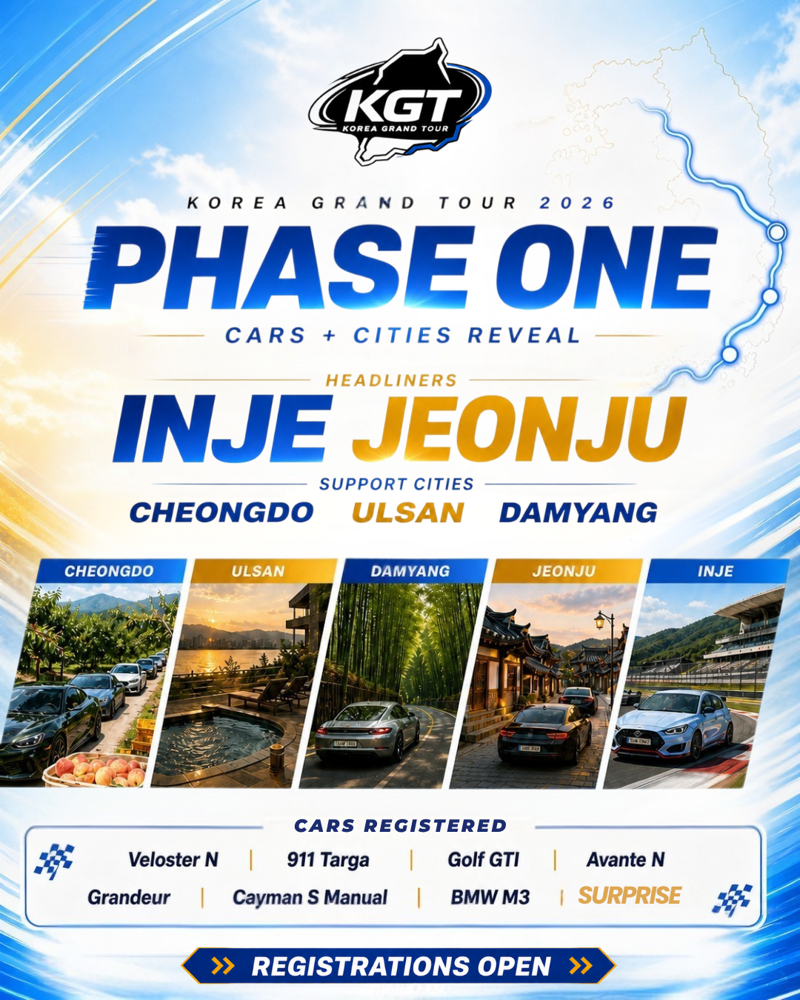

Seoul
Cars line up, drivers check in, cameras come out, and the tour starts like a proper grid release.
Driver route / Phase One
Phase One shows where the cars are pointing: Seoul start, then the revealed city chapters as a driving arc across Korea.
Official Phase One flyer
The flyer matters because it shows both sides of KGT 2026: registered cars already in, and the first places those cars will point toward.

Cars line up, drivers check in, cameras come out, and the tour starts like a proper grid release.
Performance energy, mountain air, and a driving chapter with proper rally heartbeat.
Long-road rhythm, open countryside, and the kind of transfer where the convoy starts to feel locked in.
Coastal air, city arrival, rolling shots, and an evening regroup around the cars.
Bamboo roads, green scenery, and a slower driving chapter before the final headliner.
Park the cars, tell the road stories, eat well, and let the final night feel earned.